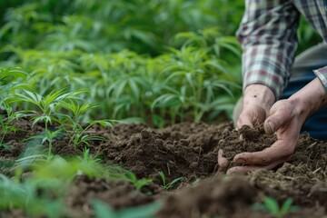

How It Works
Live GIS Integration
Assess land quality with detailed GIS data including soil type, terrain, and area size.
Weather Forecasting
Get upcoming weather predictions to understand climate risks and seasonal changes.

Soil Health & Crop Yield
Evaluate soil health and past crop performance to predict future yields and assess agricultural viability.